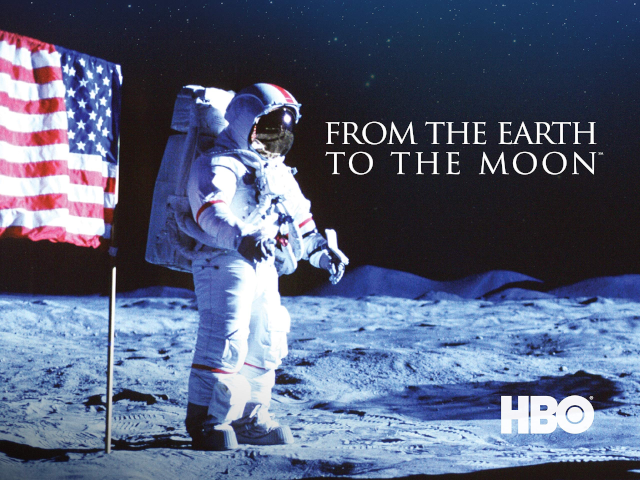
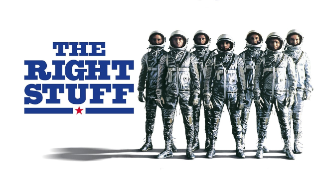
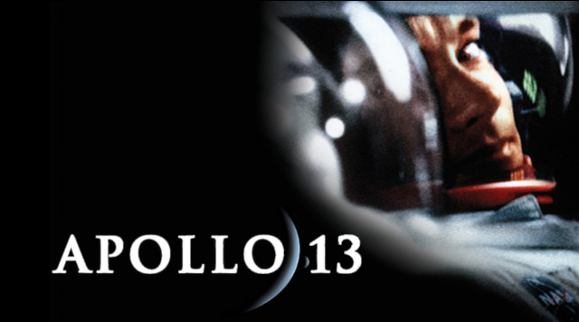

Algunos enlaces interesantes

De la Tierra a la Luna es una miniserie de HBO/Warner de 12 capítulos acerca de las misiones Apolo y la llegada del hombre a la Luna
First Man es una película de 2018 que trata sobre la preparación de la misión espacial Apolo 11 a la Luna en 1969

Elegidos para la gloria sigue la pista de los siete primeros astronautas americanos

Apolo 13 es una película de 1995 que relata los problemas de la fallida misión lunar del Apolo 13